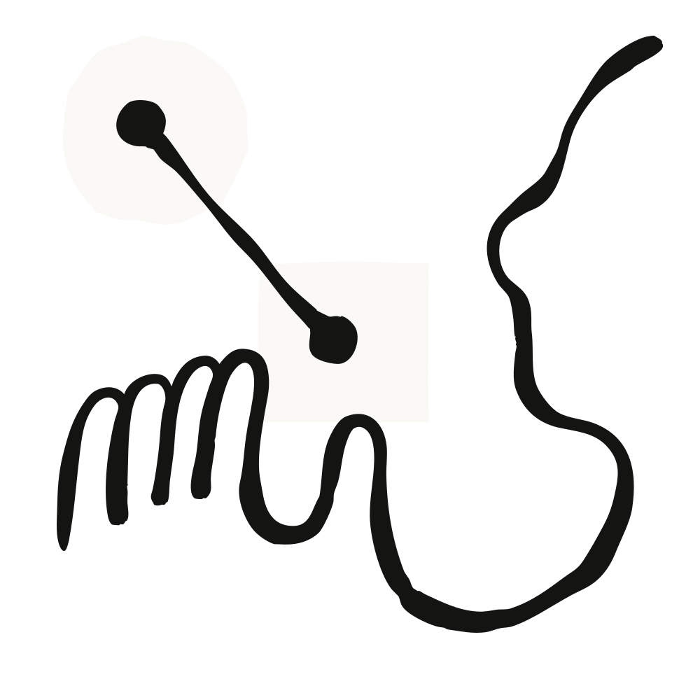

JetBrains의 에이전트 시스템 CTO Vladislav Tankov가 이야기하는 것들 — 사내 비공개 저장소를 기준으로 프런티어 모델을 어떻게 검증하는지, 팀이 어느 순간에 Claude Fable 5를 꺼내 드는지, 그리고 왜 안전장치와 데이터 보존(data retention)을 모델 활용의 곁가지가 아니라 핵심 문제로 다루는지.

JetBrains는 IntelliJ IDEA, PyCharm 같은 IDE와 Kotlin 언어를 만드는 회사다. 활성 사용자가 1,250만 명을 넘고, Fortune Global 100 기업 중 88곳이 이들의 도구를 쓴다. 말하자면 개발자가 코드를 쓰는 환경 그 자체를 만들어 파는 회사다.
이 글은 그 회사의 CTO인 Vladislav Tankov가 Anthropic과 나눈 대화를 Q&A 형식으로 정리한 것이다. 주제는 세 갈래다 — 새 모델을 어떻게 검증하는가, 언제 Claude Fable 5를 쓰는가, 프런티어 모델을 쓸 때 안전성과 데이터 보존을 어떻게 바라보는가.
Tankov는 JetBrains에서 10년을 일했고, 회사는 LLM 공급자들의 아주 초기 고객 중 하나였다고 말한다. 그가 짚는 지난 1년의 변화는 성능 지표가 아니라 태도다.
고객 쪽에도, 회사 내부에도 AI 회의론자가 있었는데 그 시기가 지나갔다는 것이다. AI가 잠깐 왔다 가는 것이 아니라 계속 남아 있으리라는 인식이 자리를 잡았고, 이건 기술 산업 전반에 걸친 크고 근본적인 변화라는 게 그의 평가다. 그의 표현을 빌리면 회사 안의 회의론자는 말 그대로 한 명도 남김없이 생각을 바꿨다.
여기가 이 인터뷰에서 가장 실무적으로 참고할 만한 대목이다. JetBrains는 코딩 도구 회사이기 때문에 상당한 규모의 평가(evaluation) 파이프라인을 굴린다. 핵심은 평가 세트가 비공개 저장소 기반이라는 점이다. 회사의 모노레포(monorepo)까지 포함된다.
이렇게 하는 이유가 명확하다. 어떤 모델들은 공개 벤치마크에서 좋은 점수가 나오도록 튜닝돼 있지만, 정작 실제 업무에 붙여보면 무너진다. JetBrains는 모델이 벤치마크 점수만큼 실제 일을 해내는지를 따로 확인하는데, 외부에 공개되지 않은 저장소를 기준으로 재면 이 확인이 훨씬 쉬워진다. 학습 데이터에 답이 섞여 들어갔을 가능성을 배제할 수 있기 때문이다.
그리고 리더보드를 하나만 두지 않는다. 세 축으로 나눠 관리한다.
두 번째 축이 특히 중요하다. Tankov는 Claude Fable 5가 토큰 단가로는 더 비싸지만, 작업당 비용은 오히려 더 낮은 경우가 있다고 말한다. 특히 복잡하고 오래 돌아가는 작업일수록 그렇다. 단가가 비싼 모델이 시행착오를 덜 겪고 더 적은 단계로 끝내면, 최종 청구서는 더 싸질 수 있다는 이야기다. 모델 비용을 토큰 단가로만 비교하는 습관에 대한 반례이기도 하다.
JetBrains 내부 평가에서 Claude Fable 5가 이전 모델 대비 어떤 숫자를 냈는지가 구체적으로 공개된다. 요약하면 정확도와 효율 양쪽이 모두 올랐다.
| 항목 | Claude Fable 5 | Opus 4.8 |
|---|---|---|
| Python 통과율(pass rate) | 44.3% | 28.2% |
| 맞대결에서 상대가 놓친 Python 과제 해결 | 18개 | 2개 |
| 해답 도달까지 필요한 단계 수 | 약 22% 더 적음 | 기준 |
Python 통과율은 16%p 차이로, 절대 수치로만 봐도 상당한 도약이다. 맞대결 비교는 더 직관적이다. Claude Fable 5는 Opus 4.8이 놓친 Python 과제 18개를 풀어냈고, 반대로 자기가 놓친 것은 2개뿐이었다.
그런데 Tankov가 더 무게를 싣는 건 결과를 믿을 수 있느냐다. Claude Fable 5는 자기가 내놓은 코드가 실행됐을 때 테스트를 통과하는 비율이 두 Opus 모델보다 훨씬 높았다. 그가 이 지점을 강조하는 이유는 이렇다 — 돌아가긴 하는데 틀린 답을 내는 코드가 잡아내기에 가장 비싼 종류의 실패이기 때문이다. 아예 터지는 코드는 즉시 드러나지만, 조용히 틀린 코드는 하류로 흘러간다.
효율 쪽 이야기도 흥미롭다. Claude Fable 5는 해답에 도달하기까지 Opus 4.8보다 약 22% 적은 단계를 밟았다. 시행착오를 덜 겪고 동작하는 코드에 닿는다는 뜻이다.
그리고 어디에 힘을 쓰는지가 다르다. Tankov가 든 예가 구체적이다. Java 과제에서 Opus 4.8은 JetBrains 환경에서 거의 도움이 되지 않는 외부 리소스를 반복해서 끌어오려 했다. 반면 Claude Fable 5는 그런 시도를 아예 하지 않고 눈앞에 놓인 코드를 가지고 작업했다. 그는 이걸 두고 Claude Fable 5가 전반적으로 더 나은 엔지니어링 습관을 보여준다고 표현한다.
이 부분의 구도가 명쾌하다. Tankov는 두 모델을 성능 서열이 아니라 역할로 나눈다.
Opus는 일꾼(workhorse)으로 여겨진다 — 그 일을 해낼 거라고 꽤 확신할 수 있는 모델이다. Claude Fable 5는 정말 좋은 추론이 필요할 때, 거의 파트너가 필요한 수준일 때, 그리고 그걸 어떻게 해야 할지 자기 자신도 확신이 없을 때 찾아가는 모델이다.
즉 결과가 예측 가능한 정해진 작업에는 Opus를, 어떻게 접근해야 할지부터 모르겠는 작업에는 Claude Fable 5를 쓴다는 것이다. 여기서 "거의 파트너"라는 표현이 핵심이다. 도구가 아니라 같이 고민할 상대로서 부른다는 뜻이다.
구체적인 사례가 둘 나온다.
JetBrains의 테크 리드 한 명이 리치 텍스트 에디터 컴포넌트 구현에 나섰다. 회사가 지난 몇 년간 여러 번 시도했다가 완성하지 못했던 물건이다. Claude Fable 5는 이걸 거의 원샷(one-shot)으로 해냈다.
더 야심 찬 쪽은 두 번째다. JetBrains에서 인기 있는 Claude Fable 5 활용처는 오래 돌아가는 에이전틱 코딩 실험이다. 방식은 이렇다.
여기서 진짜 재미있는 건 명세 자체도 에이전트가 만들 수 있다는 점이다. 기존 앱을 분석해서 그로부터 명세를 뽑아낼 수 있다. 그리고 이 두 조각 — 명세를 뽑는 능력과 명세로부터 구현하는 능력 — 을 이어 붙이면 무엇이 되는가.
Tankov의 말로는, 앱 하나를 다른 런타임·다른 프레임워크·다른 언어로 거의 블랙박스 방식으로 재작성하는 파이프라인이 된다. 기존 구현을 뜯어 읽어 명세를 복원하고, 그 명세를 목표 스택에서 다시 구현하는 것이다. 마이그레이션을 사람이 코드 한 줄씩 옮기는 작업이 아니라, 명세를 매개로 한 왕복 변환으로 다시 정의한 셈이다.
안전성과 데이터 보존에 대한 질문에 Tankov가 내놓는 답은 책임 경계를 분명하게 긋는다.
JetBrains는 스스로 가장 안전한 모델을 만들려는 회사가 아니다. 모델 자체의 안전성에 대해서는 Anthropic 쪽에서 수행한 레드팀 테스트와 그 밖의 작업이 충분하다고 믿는 쪽을 택한다. 대신 JetBrains가 책임지는 것은 배포(deployment)다. 모델을 직접 손보는 대신, 모델과 하네스(harness) 주위에 인프라와 안전망을 구축해 그 층위에서 안전을 보장한다.
정리하면 모델 튜닝이 아니라 시스템 설계로 안전을 확보한다는 접근이다. 모델을 통제 불가능한 부품으로 두고, 그 바깥에서 통제 가능한 구조를 만드는 방식이다.
Claude Fable 5의 가장 큰 용도 중 하나가 보안이라는 대목이 눈에 띈다. JetBrains는 자사 제품을 대상으로 화이트박스 테스트를 돌려 취약점을 찾는다.
그런데 여기서 보안팀이 대비하고 있는 것은 자기들이 이 모델을 쓴다는 사실이 아니다. 회사 밖의 사람들도 Claude Fable 5나 동급 모델을 돌려 JetBrains 제품 전반의 취약점을 탐색할 것이라는 사실이다. 같은 능력이 공격 쪽에서도 쓰인다는 전제 위에서 준비한다는 뜻이다. JetBrains는 규제 산업의 대형 기업들을 고객으로 두고 있어 이 준비가 특히 중요하다고 그는 말한다. 그리고 이 작업에서 Claude Fable 5는 막아서기보다는 일을 지원하는 쪽이었다고 평가한다.
이어지는 통찰이 이 인터뷰에서 가장 날카로운 부분이다. Tankov는 이걸 팽팽한 균형이라고 부른다 — 모델 공급자 쪽 분류기(classifier)가 덜 공격적으로 굴수록, 누군가는 JetBrains 제품에서 더 많은 취약점을 찾아낼 것이다. 아무도 몰랐던 것까지 포함해서.
다시 말해 모델의 안전 필터를 느슨하게 하는 것은 방어자에게만 이득이 아니다. 같은 느슨함이 공격자에게도 그대로 열린다. 취약점 탐색을 잘 도와주는 모델은 정의상 양쪽 모두를 잘 도와준다.
데이터 보존에 대한 그의 입장은 솔직하다. 숨길 것도 없이 JetBrains는 제로 데이터 보존(zero data retention)을 선호한다. 그렇게 말한 뒤 곧바로 반대편 논리를 스스로 인정한다.
무엇이 요청됐는지, 그리고 분류기가 어디서 잘못 작동했는지를 공급자가 이해하려면 다른 방법이 보이지 않는다는 것이다. 그래서 그가 긋는 선은 이렇다 — 검토가 오직 플래그된 가장 심각한 사례를 조사하기 위한 것에 한정된다면 받아들일 수 있다.
그리고 이걸 그는 공정한 맞바꿈이라고 부른다. 팀이 최고의 성과를 낼 수 있게 해주는 프런티어 수준의 지능에 접근하는 대가로는 합당한 거래라는 것이다. 데이터 보존을 무조건 거부해야 할 위험으로 두는 대신, 얻는 것과 견줘 값을 매기는 태도다.
로드맵 질문에 대한 답에서 Tankov는 기반 모델의 성능 향상은 전제로 깔아둔다. LLM 공급자들이 만드는 모델이 계속 더 유능해질 것은 기대하는 바이고, 그래서 지금 중요한 것은 다른 데 있다는 것이다.
그가 제시하는 개념은 소프트웨어 개발을 위한 일종의 조종석(cockpit)이다. 에이전트와 사람이 협업하는 공간이자, 사람이 개발 프로세스를 관리할 수 있는 공간이다. 모델이 좋아질수록 남는 문제는 "누가 더 똑똑한가"가 아니라 "이 협업을 어디서 어떻게 통제하는가"라는 판단이 깔려 있다.
JetBrains에게 이건 큰 전환이다. 이들은 그 조종석을 구동하는 에이전틱 소프트웨어 개발 생애주기(agentic SDLC) 전반에 걸친 차세대 제품군을 만들 기회를 본다. 그가 그리는 결과는 세 갈래다.
IDE를 만들던 회사가 스스로를 "에이전트와 사람이 만나는 관제 공간을 만드는 회사"로 다시 정의하고 있다는 신호로 읽힌다.
이 인터뷰에서 실무자가 가져갈 만한 지점을 정리하면 이렇다.
관련 링크: Claude Fable · 요금 보기 · 영업팀 문의